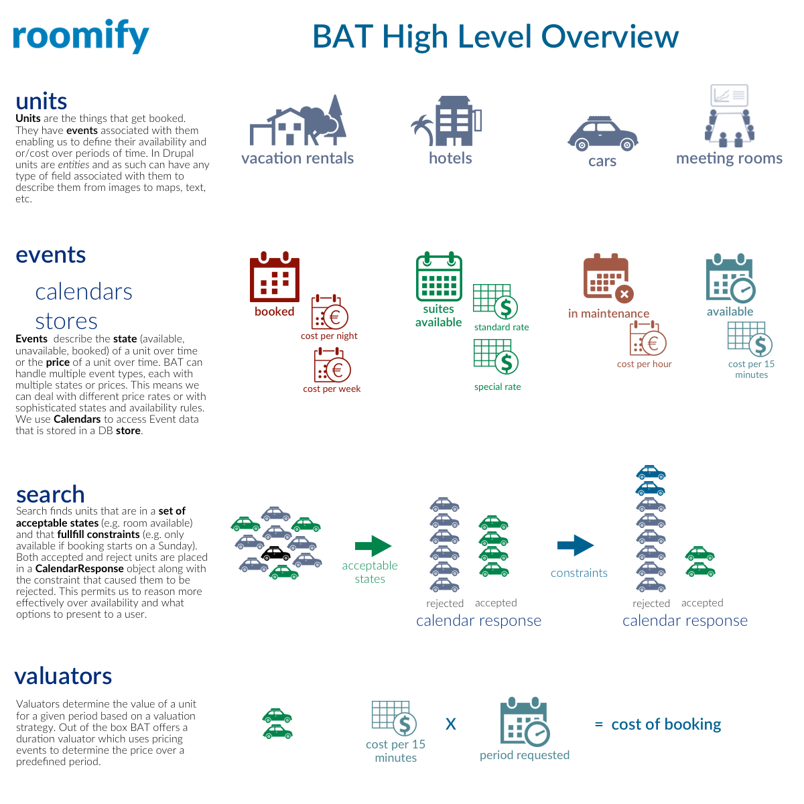

BAT Introduction¶
BAT stands for Booking and Availability Management Tools.
It is a set of tools created by the Roomify team to provide a foundation through which a wide range of availability management, reservation and booking use cases can be addressed. BAT will work with a variety of CMSs and PHP Frameworks, the first of which is Drupal.
BAT builds on our experience with Rooms, which handles the problem of bookings specifically for the accommodation for rental use case (vacation rentals, hotels, B&B, etc). With BAT we took everything we learned and built a system that will let you create an application like Rooms for: table booking at a restaurant, conference room bookings, sharing power tools with friends, or other miscellaneous booking activities.
BAT on its own is a booking and availability management framework - much in the same way that Drupal is a content management framework or Drupal Commerce is an e-commerce framework. Our aim is to build specific solutions on top of BAT to tackle specific application domains.
Basic Concepts¶
Units¶
Units are the things that can be booked. For BAT they simply have an ID, a default state (for a given event type - we will get to this later) and can define Constraints. Constraints are like extra rules about whether a specific unit is available (we get back to these as well).
For each application, units will represent something concrete like hotel rooms, cars, tables, etc.
Events¶
Events define what value a unit has for a given time period. There can be multiple types of events and the value of the event together with the type of event will provide some meaning within an application.
For example, one set of events can denote “Availability,” while another, “Price.” The value of the event type “Availability” will indicate whether a unit is available (1), unavailable (0) or booked (2) - i.e. they indicate the state of a unit. The value of the event type “Price” could denote, instead of the cost per night, a change in the state of a unit for a given time period. So to make a unit change states from available to booked, for a given set of days, you can retrieve all pricing events for that set of days and multiply the number of nights by the value associated with that event.
Calendar¶
A Calendar allows us to retrieve events of a given type for a given set of units as well as search over units to see the ones that match specific event values.
You can, for example, use a calendar to find all units that from Jan 1, 2016 to Jan 15, 2016 have Availability events that only hold a value of 2. Given our definition above, this would indicate booked units.
CalendarResponse¶
A search using the Calendar will return a CalendarResponse - this will indicate for each unit that was involved in the search whether it is part of the included units or the excluded units together with the reason it ended up in one or the other set. This allows our applications to reason about why something didn’t make the cut and display it to the end user.
Constraints¶
When a calendar does a search, it does it for a given time range and a valid set of values. We can identify further constrainers either at the global level or at the unit level. For example, a specific unit may indicate that it will only make itself available if the range search starts on a Monday, or it is of at least seven days, etc.
The Calendar Response will hold information about which constraint moved a unit from the included set to the excluded set.
Valuator¶
A Valuator performs an operation on event values to determine the value of a unit for a given period given a specific valuation strategy. The simplest case for hotels would be to sum up the cost per night. Our applications can define multiple valuators and refer to different EventTypes to cater for a range of valuation strategies.
Store¶
Store records the value of a unit for a given moment in time. The Store goes down to minute granularity which means our units can have a different value for each minute in time. The Store data structure is designed to quickly allows us to determine the value of a unit for a given time range and quickly change it.
Currently we support a SQLite store (used in our tests) and a DrupalStore. Additional Store support is on its way.